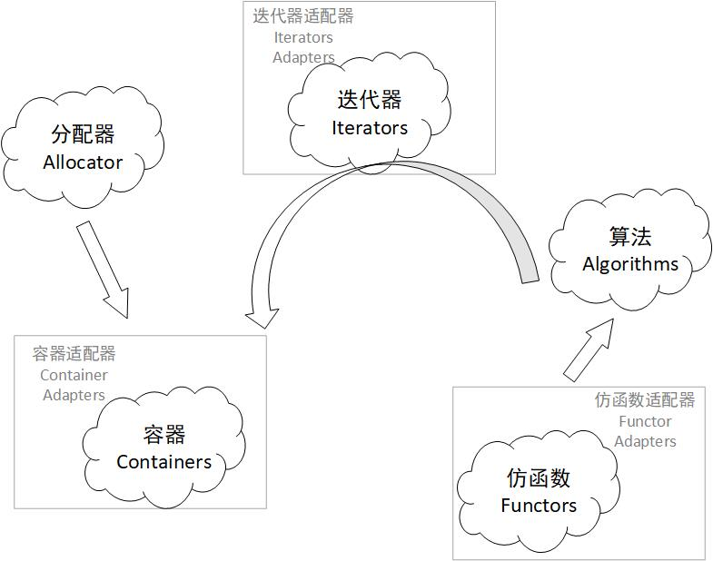
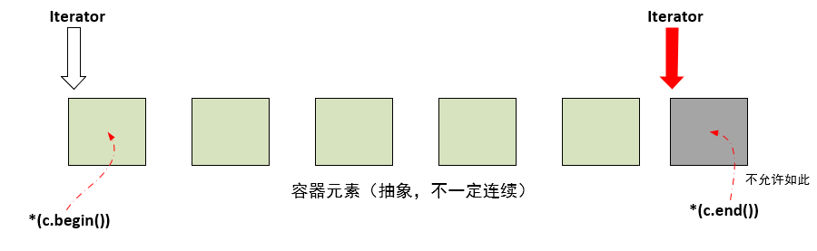

【STL】STL体系结构概述
本文将是STL系列的第一篇文章，主要参考《STL源码剖析》，辅以网络博文，不定时更新我感兴趣的内容。
笔者在入门C++这门编程语言的时候之前，就已听腻了这个STL这个词了，特别是在OJ场景下，主要是因为采用这个库就可以避免手撸一些数据结构，有相关数据结构基础就能直接上手了。当然，这都是对STL比较浅显的认知罢了，本系列将开始学习STL的相关知识。
STL是什么？
STL是Standard Template Library的缩写，中文译作标准模板库，属于C++标准库的一部分。
STL所实现的，是依据泛型思想架设起来的一个概念结构。这个以抽象概念（abstract concepts）为主体而非以实际类（classes）为主体的结构，形成了一个严谨的接口标准。在此接口之下，任何组件都有最大的独立性，并以所谓的迭代器（iterator）胶合起来，或以适配器（adapter）互相适配，或以所谓仿函数（functor）动态选择某种策略（policy或strategy）。
STL的六大组件
STL提供六大组件，彼此之间相辅相成：
- 容器（containers）：各种数据结构，如
vector、list、deque、map、set用来存储数据。从实现上来说，STL容器是class template，也就是说它能够支持不同类型的元素（前提是需要满足容器要求）。 - 算法（algorithms）：各种常用算法，如
sort、search、copy等。从实现上来说，它是一种function template。 - 迭代器（iterators）：扮演容器与算法之间的胶合剂，是一种“泛型指针”，也可以理解成抽象化的指针，实现上是借助了C++中的操作符重载的特性，所有的
STL容器都附带了一套属于自己的专属迭代器。原生指针（native pointer）也是一种迭代器。 - 仿函数（functiors）：行为类似于函数，可作为算法的某种策略（policy）。从实现上来说，其实就是一种重载了
operator ()的class或class template，比如lambda表达式也是其中一种。 - 配接器（adapters）：适配器，一种用来修饰容器（containter）或仿函数（functiors）或迭代器接口的东西。比如，
STL中提供的queue和stack是一种容器适配器，底层默认是deque容器。改变functor者，称之为function adapter；改变container接口者，称为container adapter；改变iterator接口者，称为iterator adapter。 - 配置器（allocators）：分配器，负责空间的配置和管理。从实现上看，它是一个实现了动态空间配置、空间管理、空间释放的
class template。
它们之间的关系可以用下图进行表示：

要理解这张图，需要读者结合上面对六大组件的简单解释来分析，如果还有一些
STL使用经历就更好了。
STL的实现版本
在学习C++过程，大家需要理解一个概念就是：我们学习的是一个标准（C++11、C++14、C++17等标准），而具体实现依据不同编译器，标准没规定的就是由编译器自由发挥了。在标准中没规定的东西，不要从某一个编译器实现中看到它的实现方式就说C++对这个一定是这样实现的，这是一种思维误区，这是不对的。
STL实现主要有以下的版本：
- HP实现的版本：所有
STL实现的始祖 - P.J.Plauger实现的版本：继承于HP版本，被Visual C++采用
- Rouge Wave实现的版本：继承于HP版本，被C++Builder采用
- STLPort实现的版本：提供一个以
SGI STL为蓝本的高度可移植性实现的版本 - SGI STL实现的版本：同样继承自HP版本，被GCC采用
在侯捷的《STL源码剖析》一书中分析的便是SGI STL实现的版本。一方面，GCC对C++的支持性比较高，使用率也比较高，大家平常接触得比较多的也应该是这个版本，分析这个版本的内容，也更好了解GCC；另一方面，SGI STL版本可读性很高，值得学习。
额外补充
一、容器范围区间
容器提供的范围区间一般是遵循前闭后开即[)的原则。典型地，就是来自begin()、end()函数返回的这两个迭代器所指代的范围：

begin（）返回的迭代器指向了容器元素中的第一个，而end()返回的迭代器则是容器元素中的最后一个的下一个（不存在的元素）。这是一个例子，其他的返回区间，也是遵循这一原则。
二、容器结构与分类
容器主要可以分为两大类：
- 序列式容器（SequenceContainer）：在线性排列中存储相同类型对象的容器
- 关联容器（AssociativeContainer）：提供基于键的快速对象查找的容器
序列式容器
序列式容器底层是采用类似线性表的结构来存储元素：
array：于C++11标准引入，功能等同于传统数组，但它不会退化为指针，还能提供容器相关的操作vector：封装动态数组的序列容器，特点是 存储动态管理，尾部扩增，在GCC中，其增长空间是以2倍增长的deque：双端队列，头尾两端可增可减，内部存储的方式是以分段模拟连续空间（关键靠迭代器），访问元素需要两层指针访问。list：通常实现为双向链表，支持从容器任何位置进行常数时间的元素插入和移除，不支持随机访问。forward_list：于C++11标准引入，通常实现为单链表，支持从容器中的任何位置快速插入和移除元素的容器，不支持随机访问。
序列式容器不止上述这些，随着新标准的引入，相信也会有新的容器加入到
STL中，建议关注：cppreference.com
关联容器
- 有序关联容器：底层通常采用红黑树实现
- 不定序关联容器：底层通常采用哈希表哈希表实现
有序关联容器
set：只存储Key类型的对象，有序，Key唯一multiset：只存储Key类型的对象，有序，Key允许重复map：存储键值对，有序，Key唯一multimap：存储键值对，有序，Key允许重复
不定序关联容器
unordered_set：只存储Key类型的对象，无特别的顺序，只是组织到桶中，依赖hash值，Key唯一unordered_multiset：只存储Key类型的对象，无特别的顺序，只是组织到桶中，依赖hash值，Key允许重复unordered_map：存储键值对，无特别顺序，只是组织到桶中，依赖hash值，Key唯一unordered_multimap：存储键值对，无特别顺序，只是组织到桶中，依赖hash值，Key允许重复
当然，关联式容器也不止这些，这里只是简单做个介绍。